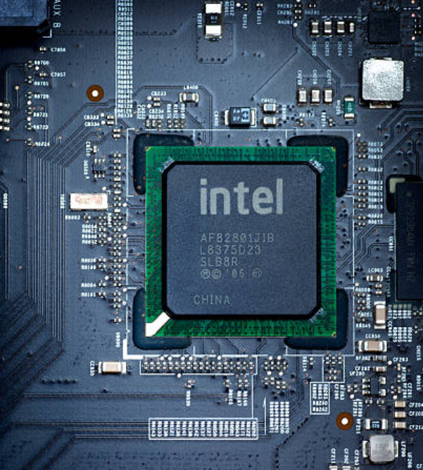
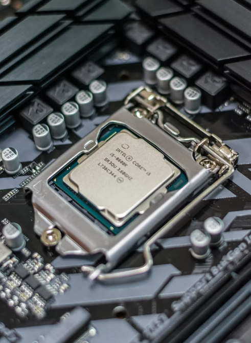
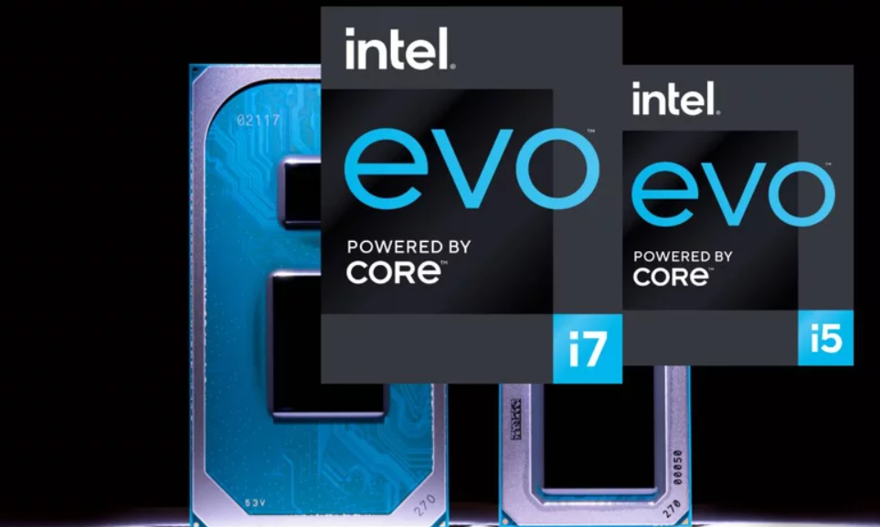
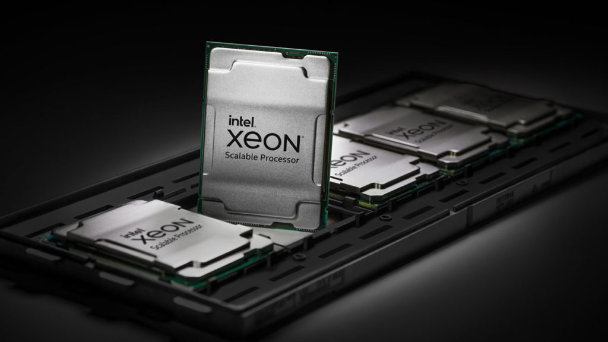
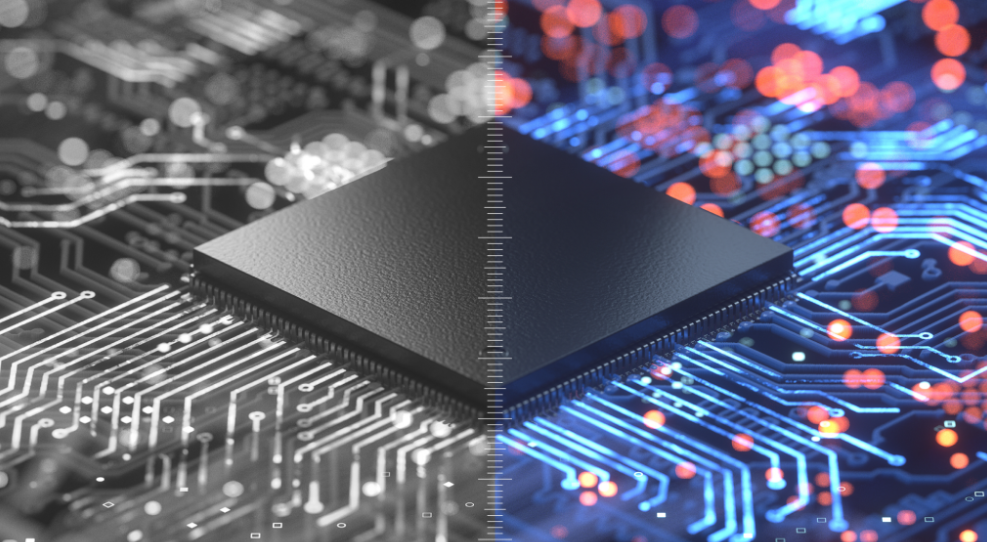

Sustainability Through the Ages

Intel Founded
Robert Noyce and Gordon Moore rename NM Electronics to Intel Corporation, beginning decades of innovation.

First Microprocessor
Intel launches the 4004, the world's first commercial microprocessor.

8086 Processor
Intel introduces the 8086 processor, creating the x86 architecture.

386 Processor
32-bit computing unlocks stronger performance and multitasking capabilities.

Peak GHG Emissions
Intel reaches peak emissions and begins major investments toward sustainability.

RISE Strategy
Intel launches Responsible, Inclusive, Sustainable, Enabling goals.

Net Zero By 2040
Intel commits to net-zero greenhouse gas emissions globally.

AI-Powered Sustainability
Intel expands AI-driven energy optimization, smart manufacturing, and renewable infrastructure to accelerate global sustainability goals.
← Scroll horizontally • Hover cards for details →
Our Sustainability Priorities
Climate Action
Intel works to reduce greenhouse gas emissions through renewable energy investments and energy-efficient manufacturing.
Learn More →Water Stewardship
Intel invests in water conservation and restoration projects to protect critical water resources worldwide.
Learn More →Waste Reduction
Advanced manufacturing processes help reduce waste and support a more circular economy.
Learn More →Sustainability Impact Dashboard
Tracking Intel’s progress toward a cleaner and more sustainable future.
Source: Intel Sustainability Reports
Frequently Asked Questions
RISE stands for Responsible, Inclusive, Sustainable, and Enabling. It guides Intel's commitment to creating positive impact on society and the environment through responsible innovation and sustainability.
Net-zero means balancing greenhouse gas emissions produced with emissions removed or offset through environmental initiatives. Intel has committed to achieving net-zero emissions globally by 2040.
Intel invests in renewable energy, efficient manufacturing processes, and advanced emission reduction technologies. These efforts lower operational impact across all global facilities and support long-term sustainability.